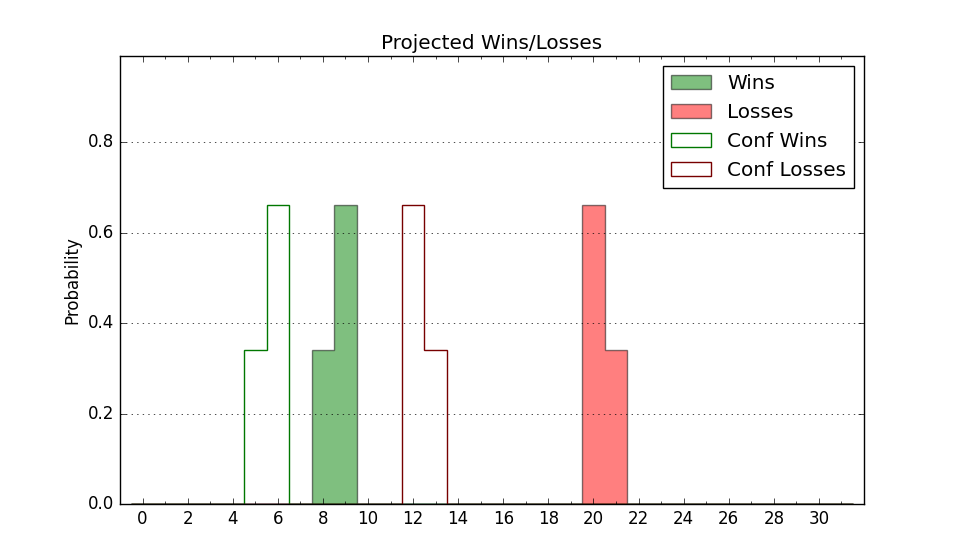

| Home | Game Probabilities | Conferences | Preseason Predictions | Odds Charts | NCAA Tournament |
| City: | Worcester, Massachusetts | |
| Conference: | Patriot (9th)
| |
| Record: | 5-12 (Conf) 8-20 (Overall) | |
| Ratings: | Comp.: -17.9 (328th) Net: -17.9 (328th) Off: 100.3 (312th) Def: 118.2 (324th) SoR: 0.0 (100th) |
| Remaining | ||||||
|---|---|---|---|---|---|---|
| Date | Opponent | Win Prob | Pred. | |||
| 2/28 | Loyola MD (332) | 67.0% | W 77-72 | |||
| Previous | Game Score | |||||
| Date | Opponent | Win Prob | Result | Off | Def | Net |
| 11/3 | @Providence (69) | 2.3% | L 79-89 | -0.9 | 20.3 | 19.4 |
| 11/8 | @BYU (19) | 0.5% | L 53-98 | -13.3 | 6.1 | -7.2 |
| 11/10 | @Utah (105) | 4.2% | L 69-87 | 4.0 | -1.9 | 2.1 |
| 11/16 | (N) Hampton (271) | 31.3% | W 67-61 | 9.3 | 5.0 | 14.3 |
| 11/18 | @Brown (292) | 23.2% | L 49-68 | -16.2 | -3.0 | -19.1 |
| 11/21 | @Sacred Heart (301) | 27.2% | L 66-79 | -5.7 | -3.2 | -8.9 |
| 11/24 | Siena (208) | 31.8% | L 69-73 | 1.3 | -0.5 | 0.8 |
| 12/3 | Northeastern (283) | 48.8% | W 76-59 | 4.2 | 23.3 | 27.4 |
| 12/6 | @Fordham (187) | 9.7% | W 70-69 | 16.2 | 4.2 | 20.4 |
| 12/16 | Dartmouth (251) | 41.7% | L 64-89 | -8.9 | -20.9 | -29.8 |
| 12/20 | @Harvard (156) | 7.9% | L 53-81 | -6.6 | -11.6 | -18.2 |
| 12/31 | Bucknell (341) | 71.7% | W 65-58 | -3.5 | 9.8 | 6.4 |
| 1/3 | Navy (138) | 19.4% | L 58-65 | -3.2 | 3.9 | 0.8 |
| 1/7 | @Lehigh (296) | 25.5% | L 58-66 | -10.5 | 8.0 | -2.5 |
| 1/10 | @American (267) | 19.1% | W 84-73 | 16.5 | 12.1 | 28.6 |
| 1/14 | Army (339) | 69.9% | W 82-75 | 6.7 | -6.0 | 0.8 |
| 1/17 | @Lafayette (324) | 34.1% | L 55-74 | -20.1 | -4.7 | -24.9 |
| 1/21 | @Navy (138) | 6.6% | L 68-85 | 14.0 | -12.4 | 1.6 |
| 1/24 | American (267) | 44.6% | L 67-76 | -6.0 | -9.1 | -15.1 |
| 1/28 | @Colgate (222) | 13.5% | L 74-79 | 10.3 | -1.1 | 9.2 |
| 1/31 | @Army (339) | 40.6% | L 68-69 | -7.6 | 9.5 | 1.9 |
| 2/2 | Boston University (268) | 45.0% | L 64-72 | -4.2 | -7.3 | -11.5 |
| 2/7 | Lehigh (296) | 53.8% | W 76-67 | 12.2 | 4.2 | 16.4 |
| 2/11 | Colgate (222) | 34.7% | L 70-74 | -4.2 | 4.1 | -0.1 |
| 2/15 | @Loyola MD (332) | 37.3% | L 73-83 | 2.9 | -17.0 | -14.0 |
| 2/18 | Lafayette (324) | 63.7% | L 83-86 | 7.9 | -14.3 | -6.4 |
| 2/22 | @Bucknell (341) | 42.6% | W 72-63 | 6.1 | 11.8 | 17.9 |
| 2/25 | @Boston University (268) | 19.4% | L 63-78 | -9.7 | -0.0 | -9.7 |
| Stats & Trends | |||||
|---|---|---|---|---|---|
| Current | Day | Week | Month | Season | |
| Composite | -17.9 | -0.1 | +0.4 | +0.2 | -1.5 |
| Comp Rank | 328 | -- | +1 | +3 | +4 |
| Net Efficiency | -17.9 | -0.1 | +0.4 | +0.3 | -- |
| Net Rank | 328 | -- | +1 | +1 | -- |
| Off Efficiency | 100.3 | -0.0 | -0.1 | +1.4 | -- |
| Off Rank | 312 | -- | -2 | +9 | -- |
| Def Efficiency | 118.2 | -0.0 | +0.5 | -1.2 | -- |
| Def Rank | 324 | -2 | +5 | -8 | -- |
| SoS Rank | 311 | -- | -- | -24 | -- |
| Exp. Wins | 8.7 | -0.0 | +0.4 | -1.5 | -1.1 |
| Exp. Conf Wins | 5.7 | -0.0 | +0.4 | -1.5 | -1.5 |
| Conf Champ Prob | 0.0 | -- | -- | -- | -3.4 |

| Advanced Stats | ||
|---|---|---|
| Stat | Value | Rank |
| Off Eff FG % | 0.485 | 273 |
| Off Ast Ratio | 0.122 | 329 |
| Off ORB% | 0.209 | 357 |
| Off TO Rate | 0.151 | 223 |
| Off FT Ratio | 0.308 | 288 |
| Def Eff FG % | 0.558 | 323 |
| Def Ast Ratio | 0.159 | 268 |
| Def ORB% | 0.299 | 162 |
| Def TO Rate | 0.118 | 343 |
| Def FT Ratio | 0.306 | 76 |